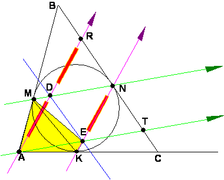

Para el aula
Problema 322
5.- Rusia. La circunferencia inscrita al triángulo ABC es tangente a los
lados AB, BC y CA en los puntos M, N y K respectivamente.La
recta paralela a NK por A corta a MN en D. La paralela a MN por A corta a NK en
E.Mostrar que la recta DE biseca a los lados AB y AC
del triángulo ABC.
Loh Po-Shen (2003) IV. Triangles
Solución de William Rodríguez Chamache. profesor de geometría de la "Academia integral class" Trujillo- Perú,

Observamos que ADNE es un paralelogramo luego AD=EN. Luego los ángulos . Y por alternos internos los ángulos . Por lo tanto el cuadrilátero AMEK es inscriptible
También observamos que los ángulos
Por lo tanto las segmentos DE y BC son paralelos
Ahora el cuadrilátero DRNE es un paralelogramo por lo tanto EN=DR
Finalmente en el triángulo ABR observamos que la recta que pasa por el punto D es paralela y base media del triángulo por lo tanto cortara a los segmento AB y AC en los puntos medios.
William Rodríguez Chamache